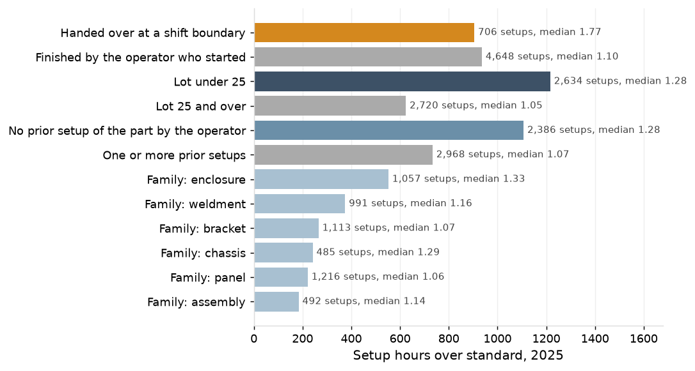
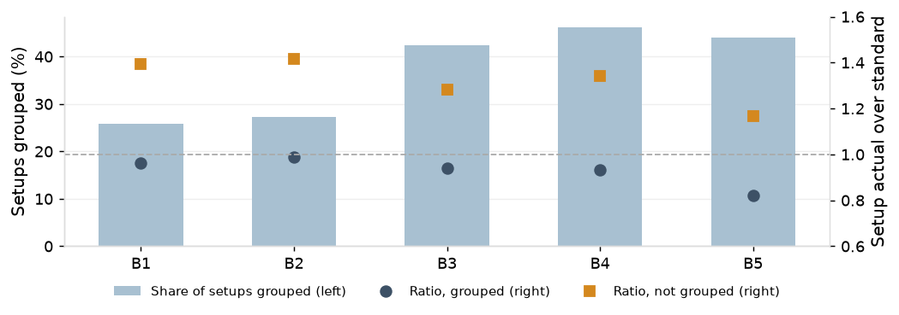
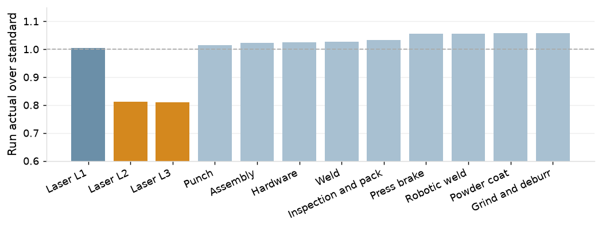

Custom sheet-metal fabrication job shop, about 120 employees, one plant. Setups and operations started in 2025; records from January 2023 to December 2025. Sources: ERP routings and job operations, shop-floor data collection and attendance exports (batch 20261003T152921Z-20250101). Hours are machine hours.
1. Brake setups against standard
Brake setups ran 6,077 hours against 4,235 standard in 2025: 1,842 hours over, 35 a week, 11% of brake machine time. The median setup runs at 1.16 of standard and the 90th percentile at 2.07; no other work center exceeds 44 overrun hours in the year. Setup ratios do not move with the 2024 year-end build: the median is 1.17 in the first quarter and 1.16 in Q2 to Q4.
2. Where the overrun sits
Setups handed over at a shift boundary are 13% of setups and 49% of the overrun hours, median 1.77 against 1.10; most of those hours are long setups that reached the boundary rather than the handover itself (section 5). Lots under 25 are 49% of setups and 66% of the overrun, median 1.28 against 1.02 to 1.05 on larger lots: the setup standards under-plan small lots. First setups of a part by the operator run at 1.28 against 1.06. Enclosures and chassis run at 1.33 and 1.29; panels and brackets at 1.06 and 1.07.

Figure 1. Brake setup hours over standard by condition, 2025, with setup counts and median ratios; the conditions overlap.
3. Operator tenure
Operators with under 12 months run 16% above tenured operators before controls and 5% after familiarity, grouping, machine, lot size, bend count and shift handover. Their 636 setups of 5,354 were made by 4 operators, 400 by one, and 67% were on B4. The tenure effect is mostly what new operators are given, not who they are.
Figure 2. Brake setup ratio of operators with under 12 months over tenured operators as controls are added, 2025.
4. Grouping
38% of brake setups follow a job on the same tooling set and run at 0.92 of standard against 1.33, saving 5.4 hours a week. B1 and B2 group 26% to 27% of their setups against 42% to 46% on B3 to B5: precision work and the hot list come first there.

Figure 3. Share of setups grouped on the same tooling set and setup ratio grouped and not grouped, by brake, 2025.
5. The setup reduction list and the handover
The top 12 part-operations release 7.3 brake hours a week at standard: 21% of the overrun and 2.3% of brake machine time. The overrun is spread across 1,980 part-operations, so no short list captures most of it.
Handed-over setups carry 16.2 hours a week above the ratio of setups finished by the operator who started them, but most of that is length, not handover: a long setup is the one that reaches the end of the shift. Setups started in the last 30 minutes of a shift are handed over 79% of the time and run at a median 1.25 against 1.14 to 1.15 for setups started with more than an hour left. On that comparison the handover itself costs 1.2 brake hours a week.
1,079 first setups of a repeat part were made while another current brake operator had set the part up in the previous 24 months. They ran at 1.56 of standard against 1.28 for setups with prior familiarity in the same lot band and family: 4.4 brake hours a week (3.1 where that operator was on the same shift). This is a matched comparison, not a start-time test, so part of it may be selection.
Part
Operation
Family
Setups
Mean lot
Setup hours
Standard hours
Median ratio
Overrun hours
Brake hours a week at standard
P-104050
20
Enclosure
169
43
209.9
135.2
1.25
74.7
1.44
P-104050
40
Enclosure
166
48
186.5
121.2
1.30
65.3
1.26
P-104146
20
Panel
197
54
225.6
171.4
1.19
54.2
1.04
P-104130
30
Weldment
45
45
55.4
26.5
1.19
28.8
0.55
P-104111
30
Weldment
57
52
76.6
49.6
1.34
27.0
0.52
P-104309
30
Assembly
39
28
66.4
42.1
1.34
24.3
0.47
P-104162
30
Weldment
81
35
92.5
70.5
1.07
22.0
0.42
P-104429
30
Assembly
12
65
35.2
13.8
1.99
21.4
0.41
P-104294
40
Chassis
20
38
33.7
16.0
1.40
17.7
0.34
P-104260
20
Weldment
42
56
44.1
27.7
1.24
16.4
0.32
P-104422
30
Enclosure
21
44
40.7
27.1
1.43
13.6
0.26
P-104084
30
Weldment
105
51
112.2
98.7
0.96
13.5
0.26
Table 1. The top 12 setup reduction candidates by overrun hours times work center utilization, 2025.
6. Run standards
L2 and L3 run at 0.81 of the run standard and L1 at 1.00; every other work center runs at 1.01 to 1.06. 553 of 1,931 active parts (29%) carry a standard dated at first quote and run 7% to 16% further above standard than refreshed parts at the same work center.

Figure 4. Run hours over standard by work center, with the three lasers shown separately, 2025.
7. Refreshing standards
With the stale standards refreshed, planned hours rise 1.7% at the brakes and 0.9% to 3.0% elsewhere; standard hours per job rise 8% on jobs for those parts (24% of jobs) and 1.9% overall. With the L2 and L3 run standards set to measured, planned laser hours fall 13.6% and standard hours per job fall 2.6%. Both together move standard hours per job by -0.7%.
Recommendation
By measured brake capacity: run the top 12 part-operations at standard as the first targets of the setup reduction program (7.3 hours a week); assign repeat setups to an operator who has set the part up before (4.4 hours a week); adopt a shift-handover standard at the brakes, the operator who starts a setup finishing it or leaving a written handover at the machine (1.2 hours a week). Together these are 12.9 brake hours a week, 4.1% of brake machine time, and go to P8 as the no-capital alternative.
For planning accuracy: raise the setup standard on lots under 25 pieces by 24% so the schedule and the quote stop under-planning them; refresh the 553 stale standards (up) and set the L2 and L3 run standards to measured (down), with the effect on standard hours per job going to estimating (P7).
Method and data
Coverage: 5,354 brake setups and 27,171 setups at all work centers in 2025; 29,031 operations for run standards. Setup ratio is setup machine hours (the union of setup transactions on the operation) over the setup standard on the job operation; the hours over standard ratio is total setup hours over total standard hours. A handed-over setup has setup transactions by different operators one after the other (first shift 06:00 to 14:00, second 14:30 to 22:30); transactions by two operators at the same time are a two-person setup and are not handovers. Familiarity counts the operator's prior setups of the part in the trailing 24 months. A grouped setup follows a job on the same tooling set on the same machine; the tooling set is on the routing for 98.4% of brake setups. Hours saved by grouping compare each grouped setup with the median ratio of ungrouped setups on the same machine. The tenure effect is the coefficient on tenure under 12 months in a regression of log setup ratio, with the controls named. The candidate score is overrun hours of the part-operation times the utilization of its work center. The assignment comparison takes first setups of repeat parts where another brake operator, still employed, had set the part up in the trailing 24 months, at the hours over standard ratio of setups with prior familiarity in the same lot band and family; machine capability and shift are not constrained except where stated. The three capacity figures overlap where a setup falls under more than one. A stale standard has a standard date equal to the part's first quote date. Refreshing scales the standards of stale parts to the actual-over-standard ratio of refreshed parts at the same work center; the laser refresh scales run standards on L2 and L3 to measured run hours.
Appendix
Table 2. Brake setup against standard by period
Period
Setups
Median ratio
Hours over standard ratio
90th percentile
Setup hours
Standard hours
Overrun hours
2025
5,354
1.16
1.43
2.07
6,077
4,235
1,842
2025 Q2 to Q4
3,921
1.16
1.44
2.06
4,459
3,097
1,362
2025 Q1
1,433
1.17
1.42
2.07
1,618
1,138
480
Table 3. Brake setups by part family
Family
Setups
Median ratio
Hours over standard ratio
90th percentile
Setup hours
Standard hours
Overrun hours
Median ratio, Q2 to Q4
Assembly
492
1.14
1.42
2.21
627
443
184
1.12
Bracket
1,113
1.07
1.39
1.95
955
689
266
1.06
Chassis
485
1.29
1.53
2.22
696
454
242
1.31
Enclosure
1,057
1.33
1.58
2.20
1,511
958
553
1.32
Panel
1,216
1.06
1.25
1.81
1,117
895
222
1.07
Weldment
991
1.16
1.47
2.01
1,170
795
375
1.19
Table 4. Brake setups by lot-size band
Lot size
Setups
Median ratio
Hours over standard ratio
90th percentile
Setup hours
Standard hours
Overrun hours
Median ratio, Q2 to Q4
Under 25
2,634
1.28
1.59
2.24
3,296
2,079
1,217
1.28
25 to 99
2,059
1.05
1.28
1.87
2,093
1,634
459
1.06
100 and over
661
1.02
1.32
1.83
687
522
165
1.01
Table 5. Brake setups by the operator's prior setups of the part
Prior setups
Setups
Median ratio
Hours over standard ratio
90th percentile
Setup hours
Standard hours
Overrun hours
Median ratio, Q2 to Q4
None
2,386
1.28
1.59
2.28
2,982
1,874
1,108
1.27
1 or 2
1,024
1.06
1.28
1.78
1,045
814
231
1.06
3 or more
1,944
1.07
1.33
1.88
2,049
1,547
503
1.07
Table 6. Brake setups by operator tenure, and the tenure effect as controls are added
Tenure
Setups
Median ratio
Hours over standard ratio
90th percentile
Setup hours
Standard hours
Overrun hours
Median ratio, Q2 to Q4
12 months or more
4,718
1.14
1.40
2.03
5,239
3,739
1,500
1.14
Under 12 months
636
1.27
1.69
2.34
838
496
342
1.28
Model
Tenure effect (log ratio)
New operators over tenured
Standard error
Share of the raw effect remaining
Tenure only
0.150
+16.1%
0.021
100%
+ familiarity
0.098
+10.3%
0.021
66%
+ grouping
0.093
+9.7%
0.020
62%
+ machine
0.087
+9.1%
0.021
58%
+ lot under 25, bends 6 or more, shift change
0.053
+5.4%
0.019
35%
Table 7. Brake setups handed over at a shift boundary, and by time left in the shift at the start
Setup
Setups
Median ratio
Hours over standard ratio
90th percentile
Setup hours
Standard hours
Overrun hours
Share of setups
Share of overrun
Not handed over
4,648
1.10
1.26
1.83
4,567
3,631
936
86.8%
50.8%
Handed over at a shift boundary
706
1.77
2.50
5.83
1,509
604
905
13.2%
49.2%
Afternoon (14:00 to 14:30)
343
1.74
2.45
5.76
714
292
423
6.4%
23.0%
Overnight (22:30 to 06:00)
296
1.75
2.62
7.23
670
255
415
5.5%
22.5%
Other
67
1.96
2.19
3.08
125
57
68
1.3%
3.7%
Two-person setup, not handed over
56
1.19
1.47
2.07
66
45
21
1.0%
1.1%
Time left in the shift at setup start
Setups
Handed over
Median ratio
Hours over standard ratio
Last 30 minutes
329
78.7%
1.25
1.56
30 to 60 minutes
342
51.2%
1.24
1.50
1 to 2 hours
686
15.6%
1.14
1.37
2 to 4 hours
1,342
5.7%
1.14
1.46
Over 4 hours
2,643
3.0%
1.15
1.41
Table 8. Brake hours released: the handover and the candidate list
Estimate
Basis
Brake hours a year
Brake hours a week
Share of brake machine hours
Handed-over setups at the median ratio of setups not handed over
ratio 1.10 on 706 setups
844
16.2
5.2%
Setups started in the last hour of a shift at the ratio of setups started earlier
hours-weighted ratio 1.53 against 1.42 on 679 setups, 65% handed over
60
1.2
0.4%
Top 12 setup reduction candidates at standard
954 setups
379
7.3
2.3%
Table 8a. First setups of repeat parts where another operator had set the part up
Setups
Count
Setup hours
Standard hours
Hours over standard ratio
Ratio of setups with prior familiarity, same lot band and family
Brake hours a week released
Share of brake machine hours
First setups of a part by the operator, all brake setups
2,386
2,982
1,874
1.59
Of which repeat parts
1,368
1,654
1,059
1.56
1.28
5.7
1.8%
Another current brake operator had set the part up, any shift
1,079
1,288
827
1.56
1.28
4.4
1.4%
Another current brake operator on the same shift had set the part up
778
926
597
1.55
1.28
3.1
1.0%
Table 9. Same-tooling grouping by brake
Machine
Setups
Grouped
Median ratio, grouped
Median ratio, not grouped
Hours saved
Hours saved a week
B1
875
25.8%
0.96
1.40
47
0.9
B2
953
27.3%
0.99
1.42
14
0.3
B3
1,342
42.5%
0.94
1.28
83
1.6
B4
1,403
46.1%
0.93
1.34
74
1.4
B5
781
44.0%
0.82
1.17
64
1.2
All brakes
5,354
38.2%
0.92
1.33
283
5.4
Table 10. Setup against standard by work center
Work center
Setups
Median ratio
Hours over standard ratio
90th percentile
Setup hours
Standard hours
Overrun hours
Press brake
5,354
1.16
1.43
2.07
6,077
4,235
1,842
Grind and deburr
5,302
1.00
1.04
1.42
1,104
1,060
44
Laser
4,082
1.00
1.05
1.42
853
816
37
Inspection and pack
4,894
1.00
1.05
1.33
770
734
35
Weld
1,483
1.00
1.03
1.37
767
742
26
Hardware
2,007
1.00
1.05
1.40
525
502
23
Powder coat
2,220
1.00
1.04
1.40
578
555
23
Robotic weld
406
1.00
1.03
1.38
503
487
16
Punch
771
0.97
1.03
1.40
397
386
11
Assembly
652
1.00
1.04
1.39
204
196
8
Table 11. Setup reduction candidates, top 20
Work center
Part
Operation
Family
Setups
Mean lot
Setup hours
Standard hours
Median ratio
Overrun hours
Utilization
Score
Hours a week at standard
Press brake
P-104050
20
Enclosure
169
43
209.9
135.2
1.25
74.7
0.91
68.2
1.44
Press brake
P-104050
40
Enclosure
166
48
186.5
121.2
1.30
65.3
0.91
59.6
1.26
Press brake
P-104146
20
Panel
197
54
225.6
171.4
1.19
54.2
0.91
49.4
1.04
Press brake
P-104130
30
Weldment
45
45
55.4
26.5
1.19
28.8
0.91
26.3
0.55
Press brake
P-104111
30
Weldment
57
52
76.6
49.6
1.34
27.0
0.91
24.6
0.52
Press brake
P-104309
30
Assembly
39
28
66.4
42.1
1.34
24.3
0.91
22.2
0.47
Press brake
P-104162
30
Weldment
81
35
92.5
70.5
1.07
22.0
0.91
20.1
0.42
Press brake
P-104429
30
Assembly
12
65
35.2
13.8
1.99
21.4
0.91
19.5
0.41
Press brake
P-104294
40
Chassis
20
38
33.7
16.0
1.40
17.7
0.91
16.1
0.34
Press brake
P-104260
20
Weldment
42
56
44.1
27.7
1.24
16.4
0.91
15.0
0.32
Press brake
P-104422
30
Enclosure
21
44
40.7
27.1
1.43
13.6
0.91
12.4
0.26
Press brake
P-104084
30
Weldment
105
51
112.2
98.7
0.96
13.5
0.91
12.3
0.26
Press brake
P-104415
40
Enclosure
15
33
22.2
8.8
1.30
13.4
0.91
12.2
0.26
Press brake
P-105307
30
Weldment
15
22
25.6
13.1
1.53
12.5
0.91
11.4
0.24
Press brake
P-104848
30
Enclosure
6
95
19.7
7.3
1.77
12.4
0.91
11.3
0.24
Press brake
P-108606
30
Enclosure
3
28
14.2
2.8
2.06
11.4
0.91
10.4
0.22
Press brake
P-104006
30
Weldment
27
28
32.7
21.6
1.21
11.1
0.91
10.1
0.21
Press brake
P-104062
20
Chassis
27
103
41.8
31.0
1.32
10.8
0.91
9.8
0.21
Press brake
P-106013
30
Chassis
3
59
13.8
3.9
1.78
9.9
0.91
9.1
0.19
Press brake
P-104710
20
Chassis
10
18
22.7
12.9
1.58
9.8
0.91
8.9
0.19
Table 12. Run actual against standard by work center and laser
Work center
Operations
Run hours
Standard run hours
Actual over standard
Actual over standard, Q2 to Q4
Laser
4,378
6,353
7,472
0.850
0.856
Punch
820
889
876
1.015
1.023
Assembly
695
2,443
2,389
1.023
1.017
Hardware
2,167
2,053
2,003
1.025
1.030
Weld
1,568
6,765
6,592
1.026
1.018
Inspection and pack
5,241
1,810
1,752
1.033
1.043
Press brake
5,692
10,240
9,704
1.055
1.052
Robotic weld
423
1,104
1,046
1.056
1.042
Powder coat
2,367
531
502
1.058
1.060
Grind and deburr
5,680
1,488
1,407
1.058
1.061
Machine
Operations
Run hours
Standard run hours
Actual over standard
Laser L1
805
1,508
1,502
1.004
Laser L2
1,808
2,410
2,967
0.812
Laser L3
1,765
2,435
3,004
0.811
Table 13. Stale-standard parts against refreshed parts
Work center
Operations on stale-standard parts
Run ratio, stale
Run ratio, refreshed
Gap
Setup ratio, stale
Setup ratio, refreshed
Assembly
211
1.109
0.990
+12.0%
0.980
0.973
Grind and deburr
1,327
1.122
1.037
+8.2%
0.983
0.968
Hardware
476
1.131
0.997
+13.5%
0.950
0.976
Inspection and pack
1,211
1.116
1.009
+10.6%
0.989
0.975
Laser
1,040
0.922
0.826
+11.5%
0.978
0.974
Powder coat
510
1.196
1.032
+15.9%
0.963
0.981
Press brake
1,263
1.112
1.038
+7.1%
1.424
1.320
Punch
186
1.079
1.003
+7.6%
0.994
0.960
Robotic weld
165
1.102
1.034
+6.5%
0.991
0.994
Weld
316
1.093
1.007
+8.5%
0.964
0.982
Table 14. Planned operation hours with standards refreshed
Work center
Planned hours
With stale standards refreshed
Change
Assembly
2,508
2,583
+3.0%
Grind and deburr
2,509
2,540
+1.3%
Hardware
2,503
2,556
+2.1%
Inspection and pack
2,479
2,523
+1.8%
Laser
8,304
8,512
+2.5%
Powder coat
1,073
1,082
+0.9%
Press brake
14,002
14,243
+1.7%
Punch
1,279
1,293
+1.1%
Robotic weld
1,530
1,550
+1.3%
Weld
7,285
7,405
+1.6%
Laser
Hours
Change
Planned laser hours, current standards
8,304
+0.0%
With L2 and L3 run standards set to measured
7,178
-13.6%
With stale parts refreshed
8,512
+2.5%
With both
7,386
-11.1%
Table 15. Standard hours per job with standards refreshed, by routing class
Routing class
Jobs
Jobs for stale-standard parts
Standard hours per job
Stale parts refreshed, all jobs
Stale parts refreshed, their jobs
L2 and L3 set to measured
Both
All
5,332
1,272
8.15
+1.9%
+8.0%
-2.6%
-0.7%
Repeat part
3,832
819
8.12
+1.7%
+8.0%
-2.6%
-0.9%
New part
459
136
8.91
+2.0%
+7.9%
-2.3%
-0.3%
Outside processing
1,041
317
7.95
+2.5%
+7.9%
-2.8%
-0.3%
Setup ratio: setup hours over the setup standard. Overrun hours: setup hours less standard hours. Stale standard: a standard dated at the part's first quote.